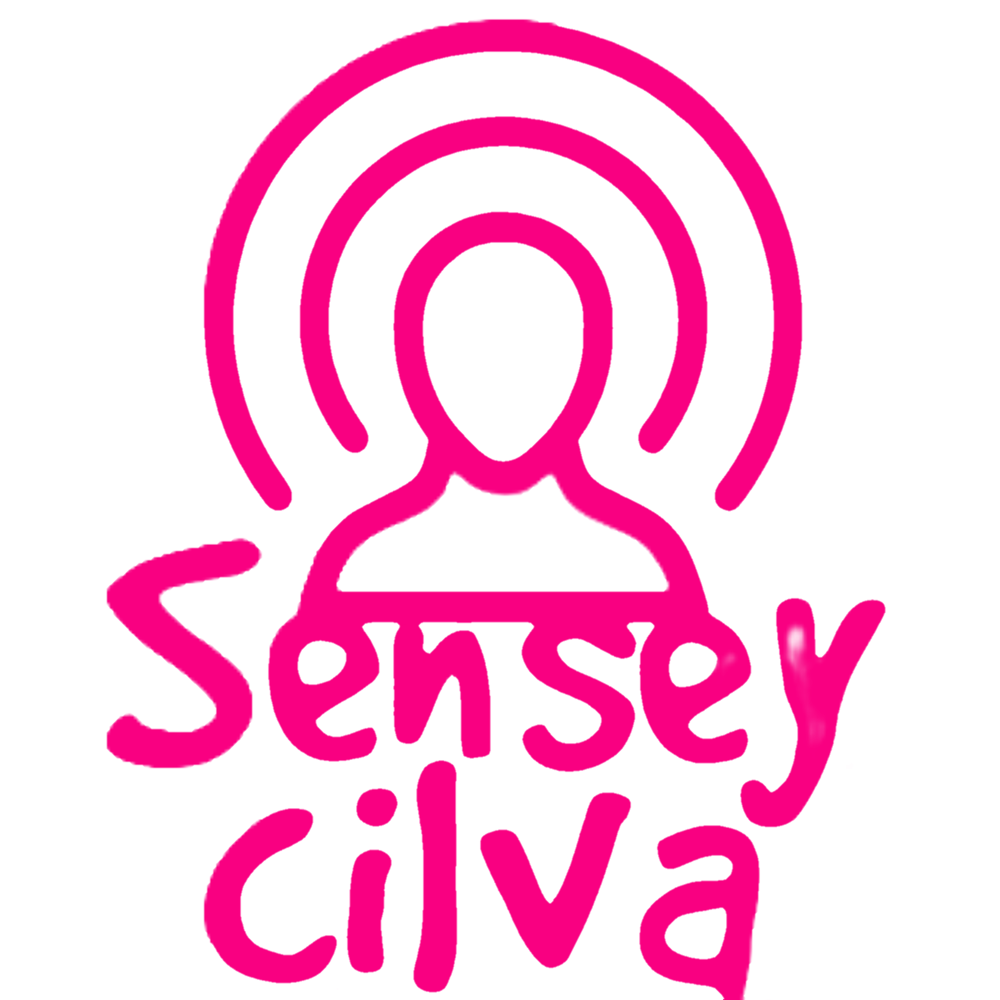

SensyCilva
Standby
🎙️
SensyCilva
Anime Radio
101.5
MHz
🤖
AI Anime Jockey
● Idle
📝 Generate a script to see it here, then press "Start Reading" to hear it.
🎧 Generate a script, then press "Start Reading"
[System]
Welcome to SensyCilva Anime Radio.
🎤 Voice
🇮🇳 Indian (Browser)
🧠 Browser TTS
🐝 Alloy
🐝 Echo
🐝 Fable
🐝 Onyx
🐝 Nova
🐝 Shimmer
✅ Ready
📝 Generate Script
🔊 Start Reading
⏹ Stop
💬 Shoutout
📰 News
🧹 Clear
● Idle
⚡ Pollinations AI · No Token Needed